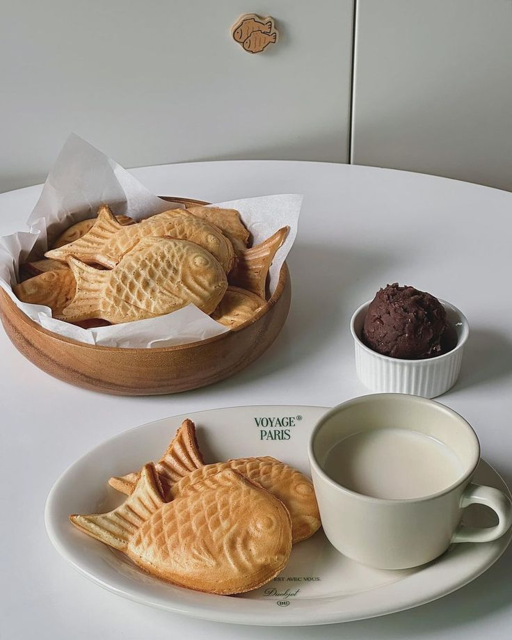
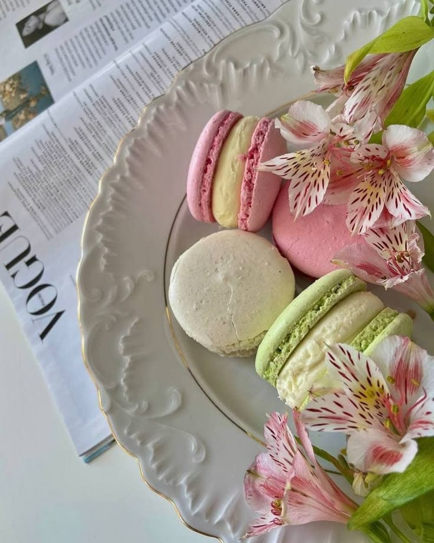
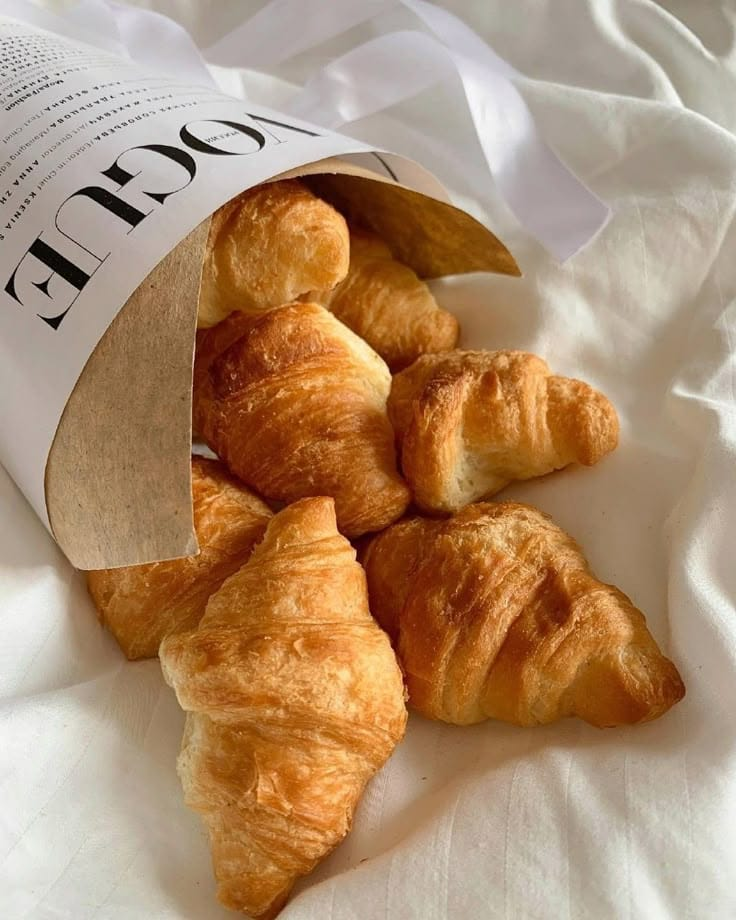
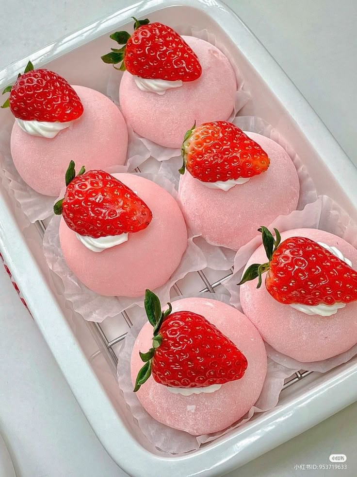

DESERT

Bungeo-ppang
Bungeo-ppang adalah kue serupa wafel dengan bentuk ikan mas yang populer di Korea. Bungeo-ppang terasa manis legit karena diisi pasta kacang merah. Beberapa penjaja
menawarkan bungeo-ppang yang diisi dengan krim custard, yang mana disebut “chou-cream bungeoppang.
Bungeo-ppang banyak dijajakan sebagai makanan kaki lima, terutama saat musim dingin.

Macaron
Macaron adalah kue mungil kecil khas Perancis yang kini populer di berbagai negara. Macaron bentuk bulat dan ditumpuk seperti sandwiches
dengan isian manis seperti selai, buttercream atau ganache. Tekstur luarnya renyah d
an lembut di dalam. Tampilannya menarik dengan warna-warna yang lucu menggemaskan.

Jcroissant
Jcroissant atau roti sabit adalah sejenis kue kering yang berasal dari Prancis. Dinamakan demikian karena bentuknya menyerupai bulan sabit.
Rasa gurih dari adonan sudah cukup membuat pastry satu ini menjadi populer. Namun croissant saat ini hadir dengan berbagai macam
rasa yang ada, seperti cokelat, stroberi, kacang almond, tiramisu, vanila, green tea, dan masih banyak lagi.

Moci
Moci adalah kue Jepang yang terbuat dari beras ketan, ditumbuk sehingga lembut dan lengket, kemudian dibentuk menjadi bulat.
Di Jepang, kue ini sering dibuat dan dimakan pada saat perayaan tradisional mochitsuki atau perayaan tahun baru Jepang. Kue ini dijual dan
dapat diperoleh dengan mudah di toko-toko kue.